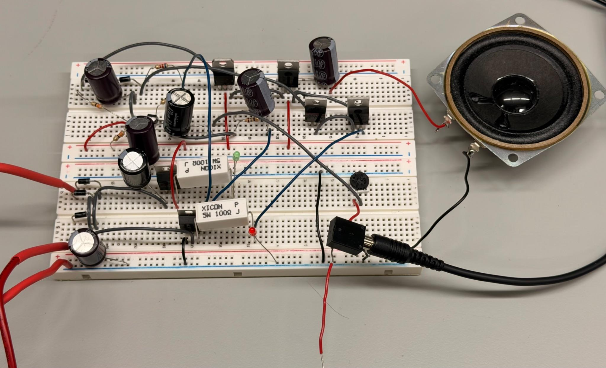

<button class="project-visual audio-visual" data-project="audio" aria-label="Explore the Class AB audio amplifier project">
  <span class="visual-label mono">CIRCUITS / ECE 2115</span>
  
  <span class="visual-footer mono">CLASS AB / BUILT &amp; TESTED <span>↗</span></span>
</button>
